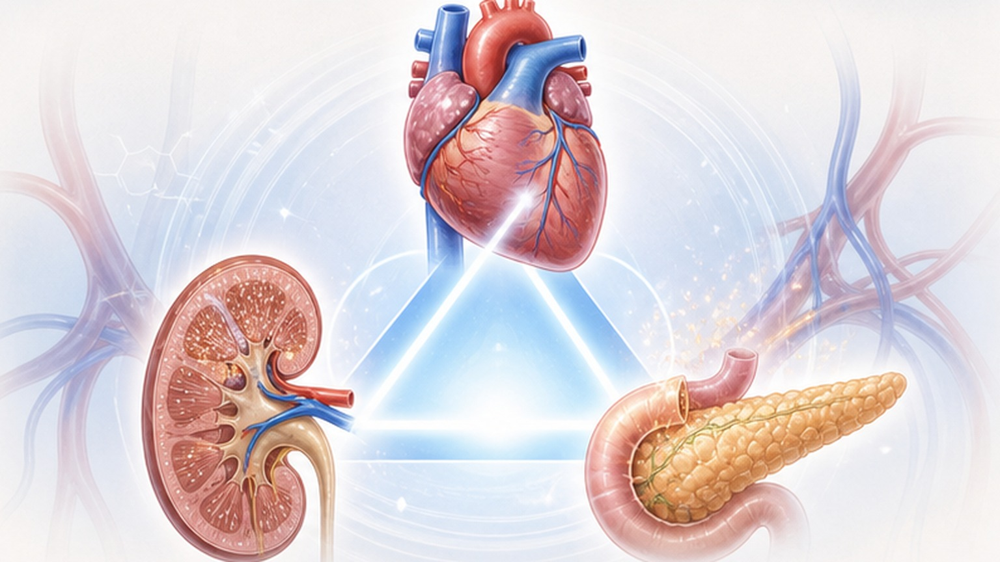
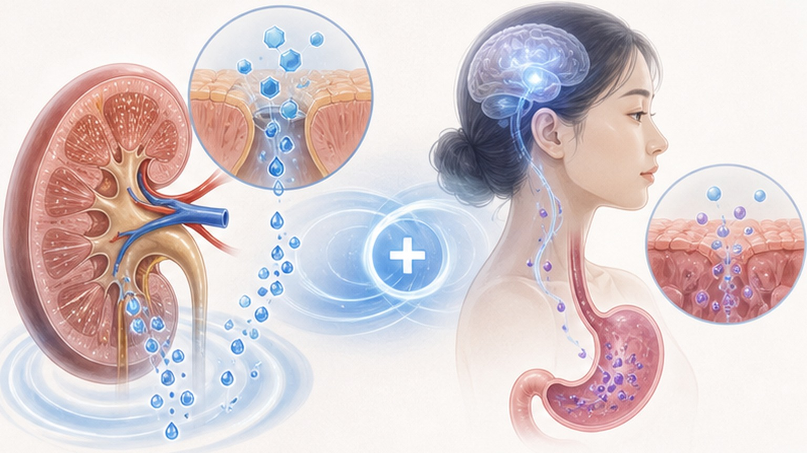

PAPER REVIEW · ENDOCRINOLOGY · CARDIOLOGY
SGLT-2i + GLP-1RA 병용,
심혈관·신장 30% 개선
Cardiovascular Diabetology 메타분석 — 18 코호트, 100만+ 명. 제2형 당뇨에서 단독 대비 MACE·중대 신장 사건·전체 사망 일관 감소. ASCVD·CKD·HF 동반 시 병용을 검토할 근거 — 진료지침은 아직 단독 권고.
SGLT-2i + GLP-1RA 병용이 단독보다 심혈관·신장 결과가 좋았다(관찰 코호트) — 시너지는 가설
주요 심혈관 사건(단독 대비 HR ~0.70)
중대 신장 사건(ESRD·alb 진행·creat 2배)
전체 사망(단독 대비, 일관성 ↑)
ADA 2024·KDA 2023 가이드라인은 ASCVD·HFpEF/HFrEF·CKD 동반 T2DM에 SGLT-2i 또는 GLP-1RA 우선 권고. 본 메타분석은 "둘 다 쓰면?"이라는 임상 질문에 답한다. 병용 시 MACE·신장 30%·사망 20% 추가 감소, HbA1c·체중·혈압 모두 단독 대비 추가 개선. 메트포르민에 두 약을 병용하는 선택을 검토할 근거를 보탠다. 관찰 코호트만으로 새 표준이라 단정할 수 없다.
SGLT-2i와 GLP-1RA는 작용 기전이 다르고 보호 효과도 다른 장기에 집중 — 상호보완 가설
3장기 동시 보호 모델 — 심장(MACE·HF), 신장(eGFR·alb), 대사(체중·HbA1c·혈압). 단독으로도 효과 있지만 작용점·효과 분포가 달라 병용 시 시너지 — 본 메타분석의 핵심 가설. · 두 약물의 상호보완성 · SGLT-2i — 신장 (proximal tubule) 작용 · 혈량 ↓ · 신장·HF 보호 최강 · GLP-1RA — incretin 경로 · 체중·HbA1c·죽상경화 · ASCVD 보호 최강 · 대사 시너지 — HbA1c 추가 감소, 체중 추가 감량, 혈압 추가 강하 · 저혈당 위험 낮음 — 두 약 단독 사용의 저혈당 위험은 낮다. GLP-1 수용체 작용제는 포도당 의존적으로 인슐린 분비를 촉진한다 · 가이드라인 권고 — 단독 권고만 명시, 병용은 실무 영역 · 본 연구 동기 — 임상 현장 병용 처방 증가에 대한 근거 정립 필요 · ⭐ 임상적 함의 — 둘 다 OK인 환자에서 "한쪽만 vs 둘 다"의 답이 그동안 모호. 관찰 코호트 메타분석은 병용의 유리한 연관성을 보여주지만 인과관계는 확정하지 못함.
Real-world cohort 메타분석. RCT보다 인과성 약하지만 일반화 가능성·외적 타당도 ↑
Systematic review + meta-analysis (real-world cohorts) — PRISMA 가이드라인 준수
18개 cohort (북미·EU·아시아 일부) · 제2형 당뇨 환자 1,000,000+ 명
① SGLT-2i + GLP-1RA 병용 ② SGLT-2i 단독 ③ GLP-1RA 단독
MACE (심근경색·뇌졸중·심혈관 사망) · 중대 신장 사건 (ESRD·creat 2배·신부전 사망)
전체 사망 · 심부전 입원 · HbA1c · 체중 · 혈압 · 알부민뇨
Propensity score matching · multivariable regression · age·BMI·HbA1c·CKD stage·HF·ASCVD
I² statistic + sensitivity analysis (cohort별·국가별·약제별 subgroup)
관찰연구 → 잔여 confounding 가능, RCT 인과성 추론 한계
병용군이 모든 endpoint에서 일관된 추가 이득 — 우연 일치 가능성 낮음 (heterogeneity 낮음)
| Endpoint | HR (병용 vs 단독) | 절대 감소 | 임상 의의 |
|---|---|---|---|
| 🫀 MACE (3-point) | 0.70 (0.65–0.75) | −30% | 심근경색·뇌졸중·심혈관 사망 종합. 단독 대비 큰 폭 감소 |
| 🩺 심부전 입원 | 0.65–0.75 | −25~35% | HFpEF·HFrEF 모두 효과. SGLT-2i 단독 효과 + GLP-1RA 추가 |
| 🩺 중대 신장 사건 | 0.65–0.70 | −30~35% | ESRD·creat 2배·신부전 사망. CKD 동반 시 가장 큰 이득 |
| ⚰️ 전체 사망 | ~0.80 | −20% | 모든 원인 사망 — 가장 강력한 임상 endpoint |
| NNT 추정 —5년 MACE 예방 NNT 약 25명 (병용 vs 단독). 관찰 코호트에서 나온 추정치라 다른 예방 약물(스타틴·아스피린)과 효율을 견주기는 어렵다. | |||

병용 시 단독 대비 모든 대사 지표 추가 강하 — 비만·고혈압 동반 T2DM에 최적
병용 시 단독 대비 추가 −0.5 ~ −0.8%. 기존 metformin + 한 약 → 둘 추가로 평균 −1% 추가 도달. 미달성 환자에 강력한 옵션.
병용 시 단독 대비 추가 −2 ~ −4 kg. GLP-1RA 단독 −5kg + SGLT-2i 추가로 합산 −7~9kg 가능. 비만 T2DM에 임상적 의미 큼.
병용 시 단독 대비 추가 −3 ~ −5 mmHg. RAAS 약제와 독립 효과. 고혈압 동반 환자에서 강압제 용량 감량 가능.
uACR 유의 감소 (병용 시 더 큼). uACR >30 환자에서 신장 진행 차단 효과. CKD 동반 T2DM에 최대 이득.
서로 다른 작용점·표적 장기 → 효과가 더해질 수 있다는 상호보완 가설
🫀 SGLT-2i 핵심 기전 · 위치 — 신장 근위세뇨관 (proximal tubule) · 작용 — Glucose·Na 재흡수 차단 → glycosuria + 혈량 감소 · 심장 — Preload·afterload 감소 + 케톤체 대사로 심근 에너지 효율 ↑ · 신장 — Tubuloglomerular feedback 정상화 → hyperfiltration 해소 · 대표 약 — empagliflozin · dapagliflozin · 한국 보험 적용 · ⭐ 강점 — 심부전 예방·신장 보호 효과 가장 큰 약. EMPA-REG·DAPA-HF·DAPA-CKD trial 근거 견고. · 💉 GLP-1RA 핵심 기전 · 위치 — 췌장 β-세포 + 뇌·위장관·심장 · 작용 — Glucose-dependent insulin 분비 + glucagon 억제 · 체중 — 위 배출 지연 + 중추 식욕 억제 → 체중 감량 5–15% · 혈관 — 죽상경화 진행 억제 (LEADER·SUSTAIN-6 근거) · 대표 약 — semaglutide (Ozempic·Wegovy) · liraglutide · tirzepatide (GIP/GLP-1) · ⭐ 강점 — ASCVD 예방·체중·HbA1c 동시 강하. 비만 T2DM·심혈관 질환자 1순위.

ASCVD·CKD·HF·고도비만 동반 T2DM — 모든 군에서 일관된 큰 이득
관상동맥질환·뇌졸중·말초혈관질환 병력. MACE 감소 효과 가장 큼. GLP-1RA의 죽상경화 보호와 SGLT-2i의 심장 보호가 더해질 수 있다(가설).
알부민뇨 동반 CKD G3a-G3b. 신장 사건 −35% 가장 큰 폭. SGLT-2i 단독 vs 병용 차이 명확.
EF 무관 — preserved·reduced 모두. HF 입원 −30%. SGLT-2i의 강력한 HF 효과 + GLP-1RA 부가 효과.
고도비만·미조절 당뇨. 체중 −7~9 kg + HbA1c −1.5~2%. GLP-1RA 우월 + SGLT-2i 추가 강하.
병용 시 두 약 각각의 부작용과 저혈당 위험을 함께 확인한다
| 부작용 | 병용 vs 단독 | 빈도 | 기전·관리 |
|---|---|---|---|
| ⚠️ 저혈당 | 차이 없음 | <2% | 두 약 모두 글루코스 의존 — 저혈당 위험 매우 낮음. 인슐린·SU 병용 시만 주의 |
| ⚠️ 위장관 (GLP-1RA) | 단독과 동일 | 초기 20–30% | 오심·구토 — 시작 시·증량 시 일시적. 4–8주 적응. 저용량 시작 |
| ⚠️ 비뇨생식기 감염 (SGLT-2i) | 단독과 동일 | 5–10% | 진균성 외음부염·요로감염. 위생 안내 + 재발 시 약 교체 검토 |
| ⚠️ DKA (SGLT-2i) | 단독과 동일 | 희귀 | Euglycemic DKA. 수술·금식·중증 감염 시 일시 중단. 환자 인지 교육 필수 |
| ⚠️ 췌장염 (GLP-1RA) | 단독과 동일 | 희귀 | 신호 약함. 급성 췌장염 병력 환자 회피. 복통 호소 시 즉시 평가 |
ASCVD·CKD·HF·비만 동반 T2DM. 한국에서 두 약 동시 인정 여부는 약제별 확인 필요.
ASCVD 동반 T2DM — 관상동맥·뇌졸중·말초혈관질환 병력 · CKD eGFR 30–60 — uACR >30 동반 시 병용 검토 · HF (HFpEF·HFrEF) — EF 무관, NYHA II-IV · 비만 + 미조절 — BMI ≥35 + HbA1c ≥8% · 다발성 위험 — 위 4가지 중 2+ 동반 시 병용 검토 · ⭐ 실무 —Metformin에 두 약 병용을 검토할 수 있음. SU·DPP-4i 대체 검토 가능.
SGLT-2i 단독 — HbA1c ≥7% + metformin 실패 시 급여 · GLP-1RA 단독 — 보험 적용 좁음 (BMI·HbA1c 기준), 일부 비급여 · 둘 다 동시 급여 — 약제별 확인 필요 (HIRA 고시) · 본인부담 — ₩10–30만/월 추정 (비급여 GLP-1RA 시 ↑) · 국내 지침 — 병용 권고 여부는 대한당뇨병학회 최신 진료지침 원문 확인 필요 · ⚠️ 주의 —비용·순응도 부담 큰 환자에서 우선순위 정하기: ASCVD 우선이면 GLP-1RA, CKD·HF 우선이면 SGLT-2i 먼저.
기존 약 유지 + 한 약 추가 → 안정화 → 다른 약 추가. 동시 시작 X (부작용 발생 시 원인 모호)
HbA1c·eGFR·uACR·체중·BP. ASCVD·CKD·HF 동반 확인. 현재 약제 + 환자 선호 + 비용 안내. 우선순위 결정.
ASCVD 우선 → GLP-1RA / CKD·HF 우선 → SGLT-2i. 저용량 시작. 4주 후 부작용·효과 확인.
첫 약 안정화 후 다른 약 추가. SU·DPP-4i 사용 중이면 단계적 감량·중단 검토. HbA1c·체중·BP 추적.
3개월마다 HbA1c·신기능·uACR. 매년 심전도·LVH 평가. 효과 부족 시 용량 증량 또는 인슐린 추가.
결과와 한계를 함께 확인합니다.
1 · ASCVD·CKD·HF 동반 T2DM은 SGLT-2i + GLP-1RA 병용 검토 — MACE·신장 30%·사망 20% 추가 감소 · 2 · Metformin + 둘 다 = 고위험 환자에서 검토할 병용. SU·DPP-4i 단계적 감량 검토 · 3 · 단계적 추가 (4단계): 현황 평가 → 첫 약 → 안정화 → 두 번째. 동시 시작 X · 4 · 한국 보험 동시 인정 약제별 확인. 비용·순응도 부담 시 ASCVD→GLP-1RA / CKD·HF→SGLT-2i 우선 · 다시 보기 — 슬라이드 링크 QR